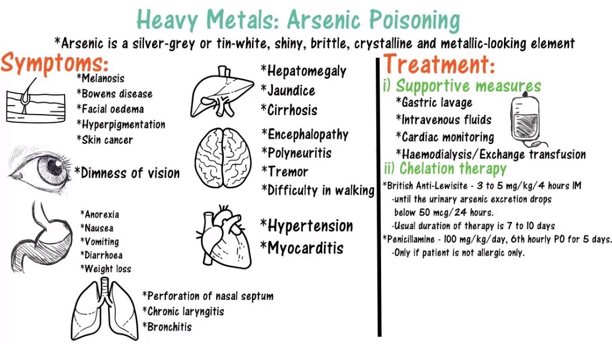

Hundreds of poisons exist. Symptoms caused by some well-known poisons such as carbon monoxide, arsenic, cyanide, and strychnine are described below. Note that these are only a few of the existing poisons. Criminal investigations involving poisoning do not necessarily involve only these types of poisons.
Carbon monoxide is one of the most common poisons in accidental or suicidal poisoning cases. Carbon monoxide (CO) is produced from the incomplete combustion (burning) of carbon bases fuels and may be released into living spaces by defective gas appliances (such as ovens, furnaces, and heaters). When CO is inhaled, it prevents oxygen from attaching to the hemoglobin molecules within red blood cells. When excessive amounts of CO are absorbed, an individual suffocates to death because oxygen cannot reach the cells of the body. An obvious symptom of CO poisoning is the bright red appearance of the skin and internal organs.
Carbon monoxide poisoning by hooking up a hose to the exhaust pipe of a car or running a car inside a closed garage used to be a common method of suicide. The amount of carbon monoxide produced in car exhaust is dependent on a number of factors but, since the development of catalytic converters, the percentage of carbon monoxide in car exhaust has been greatly reduced.
In an average adult, a carbon monoxide blood saturation level greater than 50 to 60% will cause death. However, if an average adult has a blood-alcohol concentration level at 0.20%, a carbon monoxide blood saturation level as low as 35 to 40% will kill.
Source: Richard Saferstein, Ph. D: Criminalistics - An Introduction to Forensic Science. New Jersey: Prentice-Hall, Inc. 1998. (p. 317)
Arsenic is a semi-metal (metalloid) found on the periodic table. It is used in various agricultural insecticides and as a material semiconductor in integrated electrical circuits. Arsenic ingestion causes multi-organ failure by interfering with ATP production, inhibiting enzyme and mitochondrial activity, and increasing hydrogen peroxide production. The taste of arsenic is disguised easily by food. The symptoms of arsenic poisoning include nausea, stomach cramps, and burning in the throat. If a person is given small doses of arsenic over time, the effects may be mistaken for food poisoning.
During the 1800’s, women used arsenic to improve their complexions by mixing it with vinegar and chalk and either eating it or rubbing it into the skin.
- Wikipedia: Arsenic

Cyanide (CN) is any chemical compound that contains a carbon atom triple-bonded to a nitrogen atom. The CN group is found in many kinds of compounds that may be solids, liquids, or gases. Cyanides are used in mining, electroplating, photography, and the making of blueprints. They are also used in many insecticides. Cyanide is an enzyme-inhibitor; it breaks down an important enzyme in the mitochondria of cells, thereby preventing ATP production. Without the energy from ATP, body cells die. Cyanide tends to target cells in the brain, spinal cord, and heart – and causes quick death.
The poisonous gas, hydrogen cyanide (HCN), smells like bitter almonds. Because of inheriting a recessive genetic trait, approximately 40% of the population cannot smell hydrogen cyanide.
Cyanide was reportedly used by Iraq in wars against Iran and against the Kurds during the 1980s. During World War II, a gaseous form of cyanide was released into the gas chambers of Nazi concentration camps in Auschwitz and Majdanek to kill countless Jewish people.
Strychnine is a colourless crystalline compound found in the seeds of a tree native to India. The most common use for strychnine is as a pesticide for rodents. Strychnine is both poisonous and very bitter. Only 1/50 of a gram can kill a person. Strychnine blocks important amino acid receptors in the brain and spinal cord causing intense muscle spasms throughout the body. When strychnine inhibits the activity in the medulla oblongata, the victim’s heart and lungs stop, resulting in death. When death occurs, rigor mortis sets in immediately regardless of the position of the victim. Typically, the victim’s eyes remain wide open.
During the 1904 Olympic Games, American Thomas Hicks collapsed after winning the marathon. Revival took several hours, but he survived. He later admitted to drinking brandy laced with strychnine believing this would help him win the gold medal.